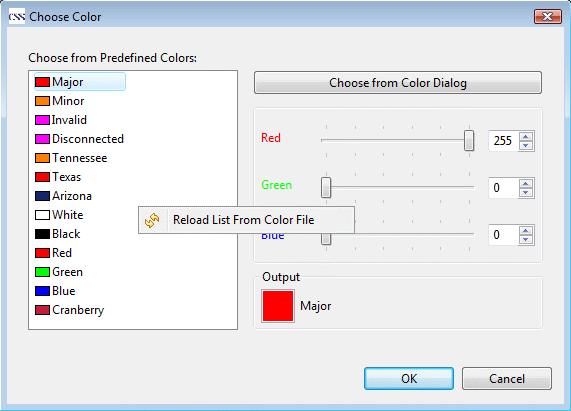
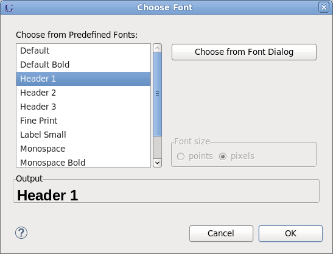

The colors and fonts used in BOY OPI can be either a native color/font or a predefined color/font macro which is defined in color/font file. The way that native color/font is used is same as in other native applications. Using color/font macro can help to maintain a consistent looking of OPIs and make it easy to change color/font later by simply changing the entry in color/font file. The problem is that the OPI cannot display correctly if the color/font file is missing or not specified in preferences.
Attention: The fonts installed on different platforms or machines may be different. For example, some fonts available to Windows may not be available to Linux. In this case, the font size and style are preserved but the font name will use the system default font. However, even the same font size value may also has little size difference on different platforms. So it is wise to leave enough free space between widget's border and the font so that the widget can display correctly on different platforms.
Color and Font macro allow you predefined some colors or fonts in separate text files. The path of the file can be specified in the preference page of BOY (open it from menu: CSS->Preferences...->CSS Applications->Display->BOY).
There are four predifined colors for alarm status display: Major, Minor, Invalid and Disconnected. You can also override them by redefining them in your color file.
The format of color file would like this:
#comment... color_name1=red_value, green_value, blue_value #comment... color_name2=red_value, green_value, blue_value ...
For example:
#Color of Tennessee Tennessee = 255,127,0 #Color of Texas Texas = 255,0,0 Arizona = 22,37,107 White = 255,255,255 Black = 0,0,0 Red = 255,0,0 Green = 0,255,0 Blue = 0,0,255 Cranberry = 196,30,58
In color editint dialog, right click the predifined color list will popup a menu which allows reloading the list from color file.

The format of font file would like this:
#comment... font_name1 = name-style-height #comment... font_name2(OS name[_swt platform]) = name-style-height ...
You can specify the fonts for a particular platform by embracing OS name and swt platform behind the font macro name. BOY will automatically find the corresponding font based on the operating system and swt platform. If no particular font defined for the OS, it will use the font macro with no OS name attached.
If the name of the font is set to
SystemDefault
, it will use operating system's default font name. This may help to
eliminate the problem caused by system difference in fonts.
A font macro
Default
is defined by BOY internally, which will use default system font. It
is the default font for all widgets. It can also be overwritten by
redefining it in font file.
Font sizes may be defined in either 'points' or 'pixels'. Points uses the standard SWT method of rendering, but may change size relative to rest of an OPI file on screens of different resolution.
Pixels scales the height of the font to use the specified number of pixels on the screen. This is consistent with other widgets in an OPI file.
In the font definition file, 18 or 18pt is interpreted as 18 points, and 18px is interpreted as 18 pixels.
For example:
//Default Title Font. It will used in case the OS specified font macro was not defined. Title = Arial-bold-18px //Title Font for Linux GTK Title(linux_gtk) = Sans-bold-18px //Title Font for MacOS Title(macosx) = Lucida Grande-bold-18px Header1 = Arial-bold-16 Header1(linux_gtk) = Sans-bold-16px Header2 = Arial-bold-14 Header2(linux_gtk) = Sans-bold-14px Text = Arial-regular-10 Text(linux_gtk) = Sans-regular-10px Text(macosx) = Lucida Grande-regular-10px LinkText = Arial-italic-10px LinkText(linux_gtk) = Monospace-italic-10px LinkText2 = Arial-bold italic-10px LinkText2(linux_gtk) = Monospace-bold italic-10px
In the font dialog, right-clicking the predifined fonts list will pop up a menu which allows reloading the list from the font file.
